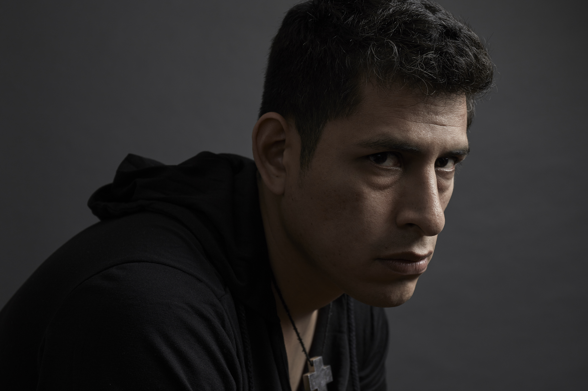
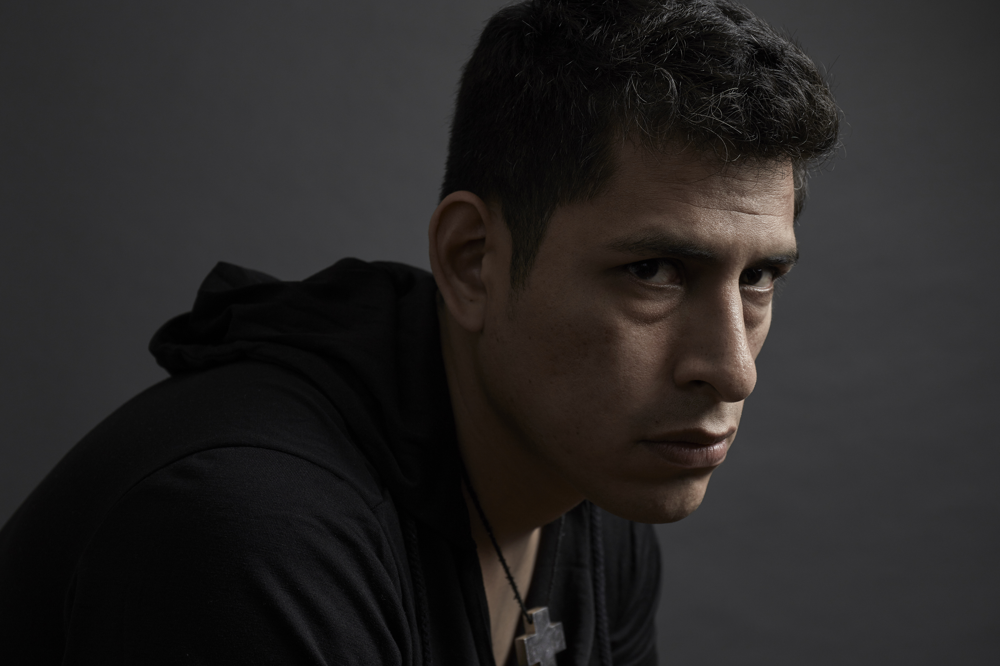

INICIO
OBRAS
ARTISTAS
NOSOTROS
CONTACTO
 

Ian Tevo
Christian Ugarte es un fotógrafo peruano. Tras años en prensa, ha decidido abocarse al desarrollo de proyectos personales. Estos trabajos son la expresión de un punto de vista antropológico, que cuestiona determinados aspectos de la relación del hombre con el sexo, el erotismo con la transgresión y los sentimientos, siempre desde una perspectiva personal.
Desde el 2010, Ian Tevo (Seudónimo y alter ego de Christian) viene trabajando en Mercenario, un proyecto con el que propone una revisión de los roles y visiones que se producen en el mundo del trabajo sexual. Su objetivo es transgredir la percepción fatalista que se tiene al respecto. Para ello, emplea un acercamiento etnográfico y, al mismo tiempo, íntimo, donde la experiencia interior nos guía en la liberación de las capas superficiales que cubren el erotismo y las emociones.
En el año 2014, Christian fue becado por el Foundry Photojournalism para llevar un taller intensivo en Guatemala, y fue nominado al Joop Swart Masterclass del World Press Photo. También ha expuesto en Photoville como parte del Colectivo Everyday Latinoamérica, y en diversas exposiciones grupales en Lima. Ha obtenido distintos premios en Latinoamérica como el POYlatam en el 2013, en la categoría Religiones, y una mención honrosa en el 5to Salón Nacional de la fotografía en Perú
Asimismo, viene desarrollando su primer largometraje, titulado “El sueño europeo”, que narra la migración hacia el Viejo Continente de latinoamericanos LGBT que ejercen la prostitución. Este proyecto quedó finalista del Pulitzer Center Travel Grant Persephone Miel 2017 y 2018.
EXPOSICIONES
2019
Entropía Generacional, ArtLima Gallery Weekend, LAC Galería, Lima, Perú
2015
Photoville, Colectivo Everydaylatinamerica
2013
Nuevas Historias, Galería Mediática, Lima, Perú
2011
Nuevas Propuestas, Centro de la Imagen, Lima, Perú
PREMIOS Y RECONOCIMIENTOS
2019
Artista seleccionado Der Greif N 12, Editado por Broomberg & Chanarin
2018
Finalista Pulitzer Center - Travel Grant Persephone Miel
2017
Finalista Pulitzer Center - Travel Grant Persephone Miel
Seleccionado para revisión de Portafolios por NY TIMES
Mención Honrosa 5to Salón Nacional de la Fotografía
2014
Becario Foundry Photo Journalism, Guatemala
2013
POY LATAM (Pictures of the year Latinoamérica), Segundo Puesto, Categoría Religiones
2012
Primer Puesto, Padre Urías Premio, Perú, Categoría Retratos
2010
Tercer Puesto, Espacio Tiempo Fotografía Documental
Finalista, Derechos Humanos (ONU), Perú
Obra